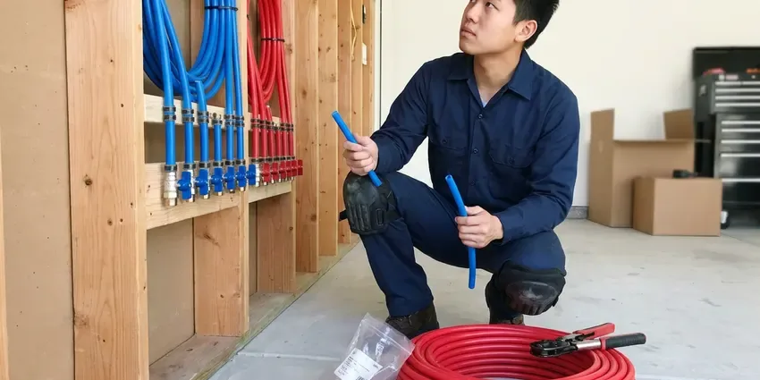

Sewage Ejector Pump Installation in Goose Creek, SC
Basement toilet backing up? KBN Plumbing installs and replaces sewage ejector pumps in Goose Creek, SC, with same-day pump swaps when we can.
- Fast Pump Replacements
- Grinder Pumps
- Discharge Valves Installed
- Local Crews

Book an Ejector Pump Visit in Goose Creek, SC
Many pump swaps get done the day you call. No obligation to schedule.
Lower-Level Bathroom Pumps in Goose Creek, SC
KBN Plumbing installs sewage ejector pumps in Goose Creek, SC for any toilet, shower or sink that sits below the main sewer line, where gravity simply cannot move waste out of the house. Waste drains into a sealed basin. When the level rises, a float starts the pump and pushes it up a two-inch discharge line to the building drain. Then it shuts off.
Work we handle every week:
- Zoeller and Liberty ejector pump installs
- Proper electrical and float settings for new pumps
- High water alarms, local or app-connected

Additional Plumbing Installation Services in Goose Creek, SC
We install water heaters, pumps, lines, and fixtures across Goose Creek, SC with precision workmanship that meets every local code.


Customers
Why Choose KBN Plumbing for Sewage Ejector Pump Installation in Goose Creek, SC?
Quotes from KBN Plumbing break out each line item: pump, basin, valves, vent, alarm, floor work and permit. It is easy to compare. If another bid leaves out the roof vent or the alarm, you will see the gap right away instead of finding out when the inspector fails the job or the basement smells.
- Sealed System, Every pipe through the lid gets a gasket stop odors.
- Right Pump, Ejector, grinder or upflush, matched to the job.
- Clean Worksite, We cover floors and contain dust, and the slab gets patched.
Citywide Coverage
Homes all over Goose Creek have ejector systems we installed, from older houses with a basement toilet to new builds with full lower-level suites. Each one gets a basin location, vent path and discharge route planned around its own layout before we quote a price, because two houses on the same street can drain very differently. No one plan fits all.
Experienced Team
Our licensed plumbers install and service ejector pumps every week, and they know how each brand handles solids and cycling. They have seen what happens when a float hangs on a basin wall or a check valve sticks open, and they set up every install so those failures are less likely and easier to fix. It shows in the details.
Safety-First Approach
Ejector pumps sit in water below grade, so electrical safety matters. The pump gets its own grounded, code-protected circuit, and the alarm gets separate power so one tripped breaker cannot kill both. Separate power is safer.
Trusted Certified Goose Creek Plumbing Services Professionals
At KBN Plumbing, we take pride in licensed, certified plumbing services throughout Goose Creek, SC. Credentials matter in this trade. Every repair, install and maintenance visit follows strict safety and quality rules, and the plumbers doing the work carry recognized industry credentials.
Call Us Now PHCC Plumbing Contractor Recognition
PHCC Plumbing Contractor Recognition Better Business Bureau (BBB) Accreditation
Better Business Bureau (BBB) Accreditation Angi Certified Pro
Angi Certified Pro ISO 9001 Quality Management Certification
ISO 9001 Quality Management CertificationWhat Goes Into an Ejector Install in Goose Creek, SC
Residential Sewage Ejector Pump Installation in Goose Creek
Residential ejector systems in Goose Creek serve basement bathrooms, lower-level suites and any fixture that sits too low to drain by gravity to the sewer. Each system needs a sealed basin, a pump with a float, a check valve and a vent. The parts are simple. Most problems come from the install, not the hardware, so we take our time on the vent and the lid seal.

Zoeller Sewage Ejector Pump Installation in Goose Creek
Zoeller's sewage line runs from light residential to heavy duty, in cast iron with tethered or vertical float switches. We pick the model by horsepower and pump curve for your lift, and a typical basement bathroom lands on a four-tenths or half horsepower unit with two-inch solids handling. Tall lifts need bigger pumps.
Duplex and Commercial Ejector Systems in Goose Creek, SC
Commercial buildings, multi-unit properties and busy homes often need duplex systems with an alternating control panel. Alternating the lead pump spreads wear, and when one fails or flow spikes, the second starts on its own and the panel sounds an alarm. Redundancy matters here.
Cost-Effective Sewage Ejector Pump Upgrades in Goose Creek, SC
Upgrading an old ejector does not always mean a new basin. If the basin is sound, we can swap in a better pump, replace the old swing check with a new one, add a full-port shutoff and install a high water alarm, which covers most of what a new system offers for a fraction of the cost. We tell you if the basin is done.
Zoeller Ejector Pump Installation in Goose Creek, SC
Zoeller has made ejector pumps for decades, and its cast iron models are the ones we see still running in older basements. They work well for new systems and for drop-in replacements, since many Zoeller models fit existing pits and discharge piping as is. Parts are easy to find.
Grinder Pump Installation in Goose Creek
Grinder pumps chop waste into a fine slurry first, which lets them push through small pipe over long distances. They are the right choice when the sewer is far away, uphill or under pressure, like on a pressure sewer system where the pump feeds a shared force main in the street. They cost more. For a basement bath near the drain, a standard ejector usually works.
Sewage Ejector Pump Basin & Pit Installation in Goose Creek
Digging the pit starts with a saw cut through the floor, deep enough to set the basin flush with the finished floor. Red clay dominates much of the upstate, while the coastal plain of South Carolina has sandy soil and a shallow water table that affects drainage and digging. The basin sits on gravel with backfill around it so rising groundwater cannot float it, and new concrete seals the floor and locks it down. A floating basin breaks pipe.

Laundry and Wet Bar Ejector Pumps in Goose Creek, SC
Below-grade laundry rooms and wet bars send gray water down that still needs to be lifted to the sewer. A compact gray water pump handles it, sized for the 15 or more gallons a washer drops at once, with a lint filter to keep fibers off the impeller. Lint kills small pumps.
Nearby Sewage Ejector Pump Installation in Goose Creek, SC
Being close by means short drives on pump calls. A Saturday alarm, a float hung on the basin wall or a check valve banging every cycle can often be handled the same day, many in under an hour. We stock common pumps.
Searching for an ejector plumber nearby in Goose Creek usually means the alarm is going off or the basement drains stopped. KBN Plumbing is local, so a plumber with a pump can often reach you that day, and the same person who diagnoses it installs it. Nobody subcontracts it. One plumber, start to finish.
KBN Plumbing at a Glance
- Licensed and insured plumbers serving Goose Creek, SC
- 24/7 emergency service with same-day scheduling
- Upfront, flat-rate pricing before work begins
- 4.8-star rated by 596+ South Carolina customers
Goose Creek Map
Goose Creek Information
- Population
- 49,249
- Area codes
- Local
- Service area
- Goose Creek and towns within a 40 mile drive
- Nearby
- North Charleston, Summerville, Charleston, Mount Pleasant
A good ejector install is gas-tight, vented through the roof and wired to an alarm, with a check valve and shutoff on the discharge for quick service.
Talk to a Plumber
Call KBN Plumbing for reliable plumbing work done by licensed pros in Goose Creek, SC.
Our Specialized Plumbing Services in Goose Creek, SC
At KBN Plumbing, you get every kind of plumbing service from one company across Goose Creek, SC. From leak detection to full system installs, our team works fast and charges fair prices on homes and commercial properties alike. Take a look at our core services below:


How an Ejector Job Runs in Goose Creek, SC
This is how an ejector install goes, start to finish, in Goose Creek, SC.
In-Home Estimate
Call (864) 588-3813 to book an estimate. You get a written quote with the pump sized.
Install the System
Basin, pump, check valve, shutoff and vent all go in. Floor patching comes after inspection.
Test and Inspect
We run the system through several cycles and test the alarm. Inspection follows.
Frequently Asked Questions About Sewage Ejector Pump Installation in Goose Creek
Replacing a pump in an existing basin usually costs $900 to $2,000. A new system with basin, venting and floor work usually starts higher.
It is not a good DIY job. Electrical wiring, sealed plumbing connections and usually concrete excavation are involved, and errors can lead to sewer gas leaks, backups and damage that costs far more than the labor you saved. Hire it out.
A well-kept pump tends to run 7 to 10 years, and better units can go longer. Run frequency and what gets flushed decide most of it.
Wipes, paper towels of any kind, feminine products, grease and cat litter. Those clog pumps and cause early failure.
Constant running, a pump that never starts, grinding or humming, alarms that keep tripping and sewage odor near the basin. If the pump is past 7 to 10 years old and showing any of those, replacing it now is usually cheaper than cleaning up after it fails. Age is a clue.
We warranty our labor in writing, and the pump carries the manufacturer's warranty. The exact terms come with your estimate.
A new system tends to run one or two days. It includes the floor cut, excavation, basin and pump, drain and vent connections and the discharge, then the concrete after inspection. Pump swaps are faster.
An ejector handles solid waste and wastewater from fixtures below the sewer line, like toilets and sinks. A sump pump only handles groundwater.
What Our Customers Say About Our Plumbing Experts

Diane F.
My kitchen faucet had dripped for months and I finally got tired of hearing it at night. KBN Plumbing came out the next morning, replaced the cartridge and the O rings, and tightened a loose base that was letting water under the sink.
Faucet Repair · Sumter, SC
Laura S.
Our 40 gallon tank started leaking from the bottom after thirteen years. The tech hauled the old one out, set a new unit with a fresh expansion tank, and had hot water running in about four hours. He took the old tank with him too.
Water Heater Replacement · North Charleston, SCJessica T.
We were adding a gas range in a kitchen remodel and needed a new line run from the meter. The plumber pulled the permit, ran the pipe through the crawl space, and had it inspected and approved within the week.
Gas Line Repair · North Charleston, SC
Kevin O.
Before buying our house I paid for a sewer camera inspection. KBN Plumbing found a belly in the line that held standing water about forty feet from the cleanout. We used the video to get the sellers to fix it before closing.
Sewer Camera Inspection · Charleston, SC
Greg S.
I manage a small strip center with six tenants. KBN Plumbing handles our annual backflow testing and fixed a recurring clog in the shared sewer line that had been backing into the nail salon. Their reports come in clean and on time.
Commercial Plumbing · Goose Creek, SC
Emily R.
The shutoff valve under our kitchen sink snapped off in my hand on a Sunday morning. KBN Plumbing had someone out by early afternoon. He replaced both angle stops with quarter turn valves and showed me where our main shutoff was, which I honestly did not know.
Plumbing Repair · Hilton Head Island, SC